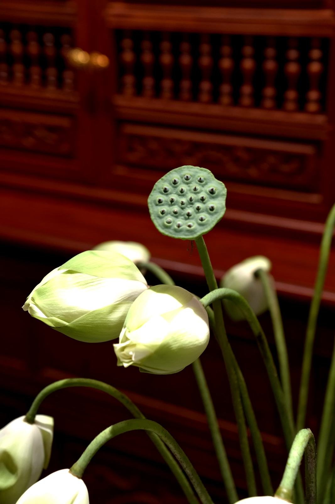
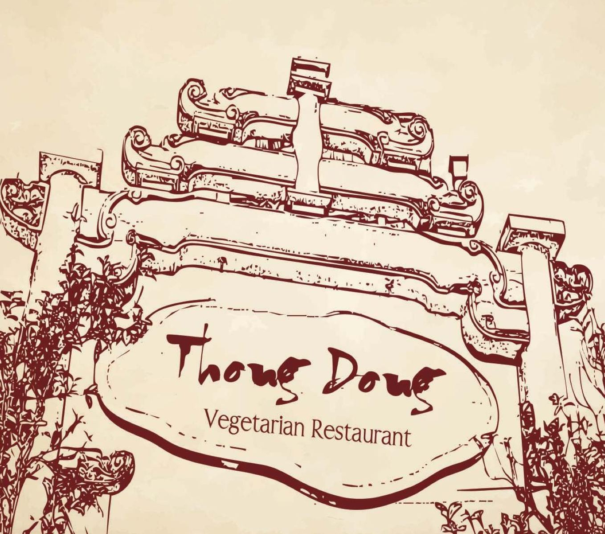
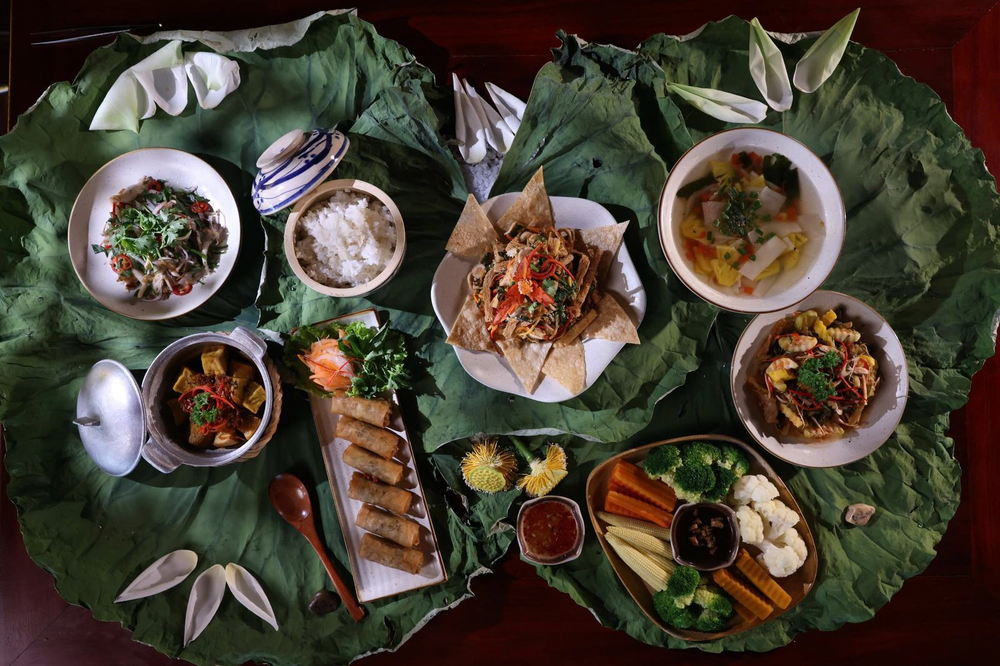

Thong Dong Quán
Quán ở 01 Phạm Ngũ Lão, trên phố đi bộ Huế. Gỗ trầm, sen, và bữa ăn đủ chậm để ngồi lại — từ sáng sớm đến khi phố lên đèn.
Bếp mở cửa mỗi ngày, 7:00–22:00. Trưa và tối nhận món từ 10:00, gọi món cuối lúc 21:00.


Từng muỗng là cả vũ trụ.
Giữa lòng phố thị, chúng tôi mời bạn đến Thong Dong Quán – nơi mỗi món chay được chuẩn bị tỉ mỉ, và mỗi khoảnh khắc đều trở nên lắng đọng hơn.
Quán ở 01 Phạm Ngũ Lão, trên phố đi bộ Huế. Gỗ trầm, sen, và bữa ăn đủ chậm để ngồi lại — từ sáng sớm đến khi phố lên đèn.
Bếp mở cửa mỗi ngày, 7:00–22:00. Trưa và tối nhận món từ 10:00, gọi món cuối lúc 21:00.


La paix est le chemin.
Bình an là con đường